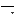

| オプションポップアップ
この３つのメニューは、ツールに関する各種設定をおこなうためのものです。  ラインの太さ ラインの太さは通常、幅１ピクセルですが、このポップアップメニューをクリックして他の太さを選択することでラインの太さを変更することができます。(最大の太さは幅８ピクセルです) 鉛筆、消しゴム、矩形描画、楕円形描画、多角形描画の各ツールにこの設定が反映されます。 アンチエイリアシング ラインや曲線は通常、境界部分がギザギザに描画されますが、このポップアップメニューをクリックして“アンチエイリアス-入”を選択することによって境界部分をスムーズに見せるように中間色で補完することができます。ライン、楕円形描画、多角形描画の各ツールにこの設定が反映されます。 塗りつぶし 線で囲まれている形状の描画の際、通常は内部が描画されず輪郭のみが描画されますが、このポップアップメニューをクリックして“塗りつぶし”を選択することによって内部も描画色やパターン設定で設定したパターン(詳しくは下を御覧ください)で塗りつぶして描画することができます。 矩形描画、楕円形描画、多角形描画の各ツールにこの設定が反映されます。 パターン設定
色設定
|